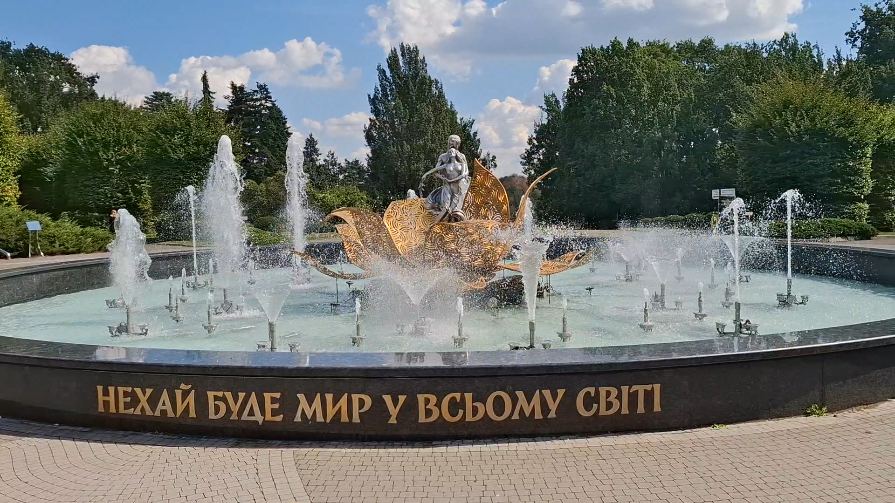

Дата народження: 13 травня 2007 року;
Місце народження: м. Полтава.
Освіта:
Ліцей: ПМБЛ №1.
Університет: НТУУ
«КПІ імені Ігоря Сікорського».
Одне з моїх улюблених місць у Києві – Національний ботанічний сад імені М. М. Гришка. Тут приємно гуляти та відпочивати серед зелені, а велика кількість різноманітних рослин робить прогулянку цікавою у різні пори року.
